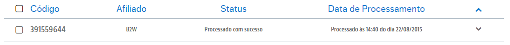
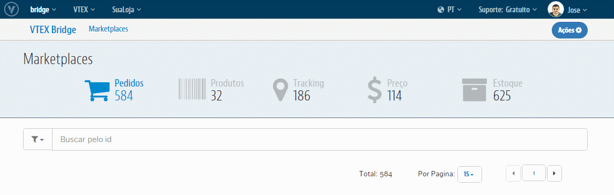
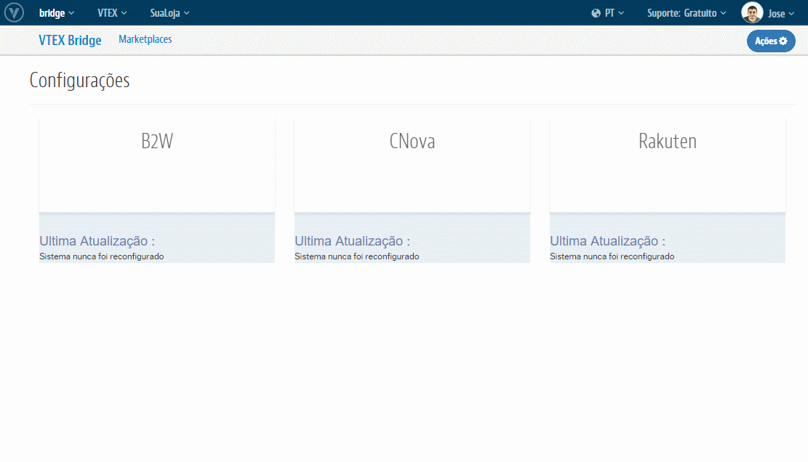
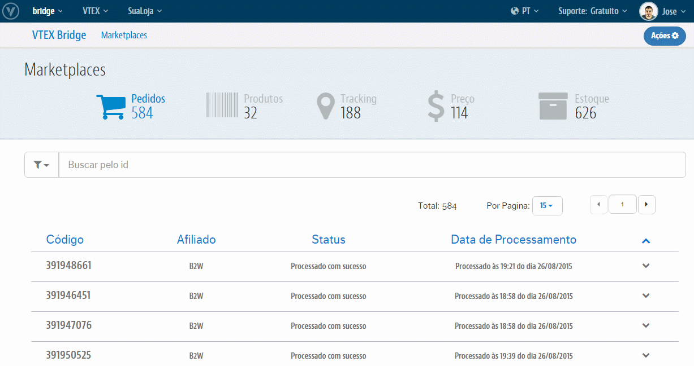
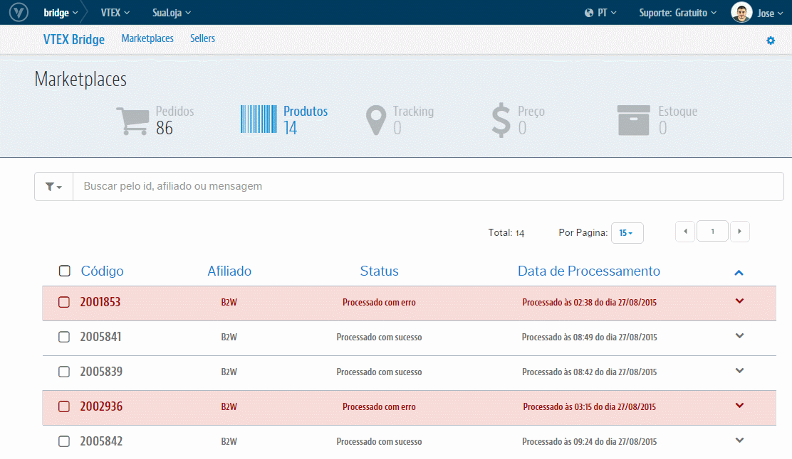
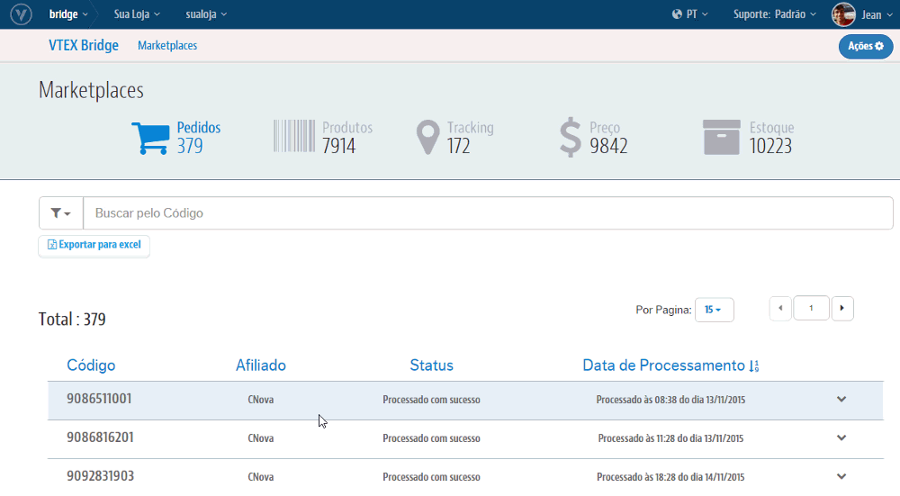

VTEX Bridge
O VTEX Bridge é o módulo responsável por intermediar e gerenciar as comunicações entre a sua loja VTEX e os Marketplaces. Nele, é possível visualizar dados sobre erros e sucessos, que ocorrem nas diversas interfaces de Pedidos, Produtos, Preço, Estoque e Tracking. Além de poder tratar esses erros e reprocessar você mesmo a integração na interface que se encontra. O módulo também é encarregado das configurações que ativam as integrações diretamente em sua Loja.
As movimentações que serão registradas no VTEX Bridge serão apenas para aqueles Marketplaces que hoje integramos de forma ativa. Isto é, onde somos nós quem realizamos as exportações de Produtos, Preços e Estoque e/ou onde nós capturamos os Pedidos realizados no Marketplace. Os Marketplaces que temos hoje com a integração ativa são: B2W, CNova, Rakuten, Csu, Mercado Livre, Buscapé e Walmart (apenas na parte de Produtos, Preços e Estoque. Pedidos o próprio Walmart quem insere na VTEX).
Observações importantes :
- O acesso ao Bridge pode ser feito no Admin da sua loja, exatamente na barra de navegação dos módulos da VTEX.
- As informações que estão no Bridge são logs da última interação de um item com o Marketplace.
- O Bridge não altera nenhuma informação do pedido ou do sku que está sendo integrado.
- O Bridge não recebe informações das integrações que não são nativas da VTEX.
- O Bridge não faz o reprocessamento em lote. Uma vez que cada item deve ser analisado individualmente e cada um tem uma ação necessária diferente.
- O Bridge não tem integração com os ERP’s.
Visão geral

Todas as interfaces do VTEX Bridge contém as colunas de Código, Afiliado, Status e Data de Processamento. Indicando diferentes informações sobre os registros, auxiliando melhor a manipulação dos dados.

Para cada entrada de dados temos as seguintes caracteristicas:
Código: Indica o código do Pedido no Marketplace ou o ID do SKU na VTEX. Também está relacionado ao registro de sucesso ou erro no VTEX Bridge.
Afiliado: Indica qual o Marketplace que originou o respectivo registro.
Status: Indica o atual status do registro, podendo variar entre sucesso, erro e em processamento.
Data de Processamento: Indica quando a captura do sucesso ou do erro foi realizada. Como por exemplo, para os pedidos com sucesso, onde esta será a data que indicará a criação do Pedido.
Configurações de Marketplaces
Temos hoje integrações de caráter nativo, onde parte da VTEX a exportação do Catálogo e o consumo dos Pedidos de seus Parceiros, para os Marketplaces da B2W, da CNova, da Csu, do Buscapé e o da Rakuten. Os Marketplaces que isso não occorre são o do Mercado Livre (pois realiza sua propria importação de catálogo) e o Walmart (que insere seus pedidos e o Vtex exporta).

Onde cada um destes integradores terá um formulário de configuração com suas ações, funções, particularidades e dados que precisam ser fornecidos para ativa-las na seguinte figura. Por exemplo, na estrutura de configuração da CNova:

Combinações de Filtros
Os filtros do VTEX Bridge permitem agrupar os registros de Pedidos por erro, sucesso ou processando. Além de poder combinar esses filtros, com a origem de qual Marketplace se refere.

Buscas Específicas
É possível buscar um registro específico de acordo com seu Código. Permitindo a busca pelo o ID do Pedido para as interfaces de Pedidos e Tracking. E pelo ID do SKU para as interfaces de Produtos, Preço e Estoque.

Caso queira limpar a busca e voltar para a listagem que estava anteriomente, basta clicar no "X" ao lado direito do campo de Busca.
Reprocessamento de registros
Caso uma transação de uma integração não tenha ocorrido por conta de um erro, esta possuirá opções de reprocessamento após seu tratamento, permitindo o reenvio correto para o Parceiro:

Removendo registro
A ação de Remover Log, consiste em retirar o registro da interface, a fim de "limpar" a tela. Para remover o log, clique sobre a linha e em seguida no botão "Ações", e então em "Remover Log". Esta ação pode ser feita nas integrações com ambos os status (sucesso e erro).

Começando a usar
Criado para oferecer a flexibilidade máxima em relação as Configurações de Marketplace e controle do fluxo de integração, tanto do Catálogo quanto de Pedidos. O VTEX Bridge também fornece a possibilidade de reprocessar eventuais erros, que podem surgir durante essa comunicação com esses Parceiros. Entenda cada um deles: